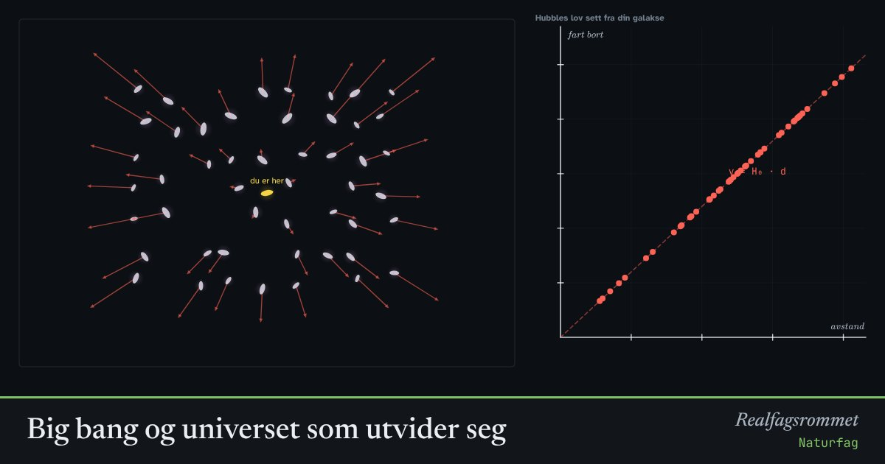

Big bang og universet som utvider seg
Universet har utvidet seg i 13,8 milliarder år fra en svært varm og tett tilstand. Tre observasjoner støtter det: galaksene fjerner seg, rommet er fylt av svak bakgrunnsstråling, og det er akkurat så mye helium som teorien forutsier.
Start animasjonen
Formler
Om animasjonen
Hubbles lov: Jo lenger unna en galakse er, jo fortere fjerner den seg. Det er ikke galaksene som farer gjennom rommet, men rommet mellom dem som strekker seg. Klikk på en annen galakse: Derfra ser det akkurat likt ut. Universet har ikke noe sentrum.
Rødforskyvning: Hydrogen har spektrallinjer ved bestemte bølgelengder. I lyset fra fjerne galakser er linjene flyttet mot rødt fordi lysbølgene er strukket ut på veien.
Bakgrunnsstrålingen: 380 000 år etter big bang ble universet kaldt nok til at det ble dannet atomer, og lyset kunne gå fritt. Det lyset har siden blitt strukket ut til mikrobølger tilsvarende 2,7 K, og vi måler det fra alle retninger.
Teorien forutsier også at omtrent en firedel av massen i det tidlige universet ble helium og resten hydrogen. Det stemmer med det vi måler i de eldste stjernene.
Prøv dette
- Velg en annen galakse som observatør. Hvorfor ser det ut som om alle galakser fjerner seg fra akkurat deg?
- En galakse er 1000 millioner lysår unna. Hvor fort fjerner den seg? Bruk H₀ ≈ 21 km/s per million lysår.
- Hvorfor ble universet gjennomsiktig først etter 380 000 år?
- Hvilke tre observasjoner støtter big bang-teorien?
Kompetansemål
- Naturfag: Hypoteser, modeller og teorier som forklarer verden
- Naturfag: Big bang og observasjoner som støtter teorien